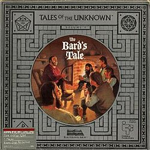

The Bard's Tale
Research in progress. The Bard's Tale appeared in 1985 under the Electronic Arts label. The catalogue credits Interplay. Known catalogue formats: Commodore 64, Amstrad CPC, ZX Spectrum, MSX, MS-DOS, Atari ST, Amiga, Apple II, Amstrad PCW, Commodore 16. This holding page will be expanded as contemporary material and first-hand recollections are reviewed.